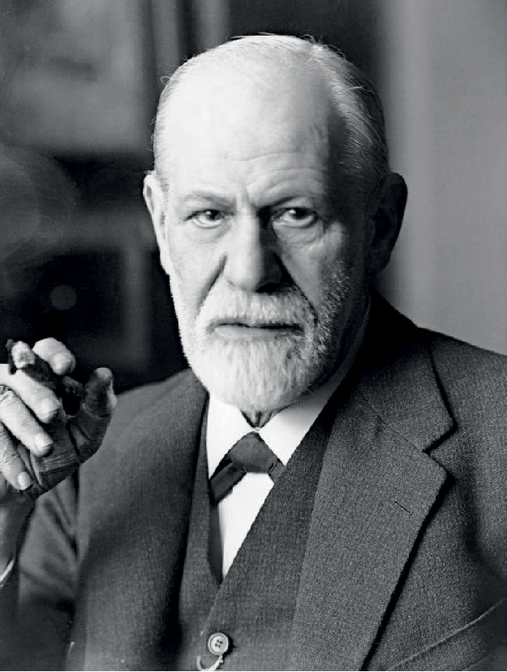

Sigmund Freud

An Austrian neurologist and the founder of psychoanalysis.
Father of Psychoanalysis
Sigmund Freud is best known as the creator of the therapeutic technique known as psychoanalysis. The Austrian-born psychiatrist greatly contributed to the understanding of human psychology in areas such as the unconscious mind, sexuality, and dream interpretation.
Freud was also among the first to recognize the significance of emotional events that occur in childhood. Although many of his theories have since fallen out of favor, Freud profoundly influenced psychiatric practice in the twentieth century.
READ MORE...
PSYCHOANALYSIS
Psychoanalysis was developed in the late nineteenth century both as a theory and a form of therapy.
Based on the premise that unconscious conflicts form the root of psychological issues, psychoanalysis suggests symptoms can be reduced by bringing these conflicts into conscious awareness.
The theory of psychoanalysis has been criticized and revised numerous times, but it remains one of the most influential approaches in the field of psychology.
A CLOSER LOOK AT FREUD'S LIFE
Our exploration of his legacy begins with a look at his life and time.
His experiences informed many of his theories, so learning more about his life and the times he lived in can lead to a deeper understanding of where his theory came from.
Discover more about his life in this brief biography and timeline of his life, discover some of his most famous quotations, or take an in-depth photo tour of his life from birth to death.